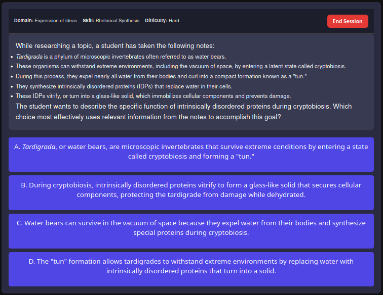
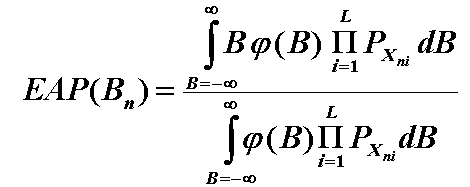

RocketPrepAI: AI Powered Test Prep
Over the past couple of months, I have been developing an AI powered SAT preparation service called RocketPrepAI. It has been an exciting journey for me and the rest of my team, given this is our first shot at the startup scene. Our goal is to provide low-cost, high quality SAT practice and assitance for students who don't have the resources to pay for private tutors. Today, I thought I'd go over how RocketPrepAI works and what makes us unique.
Our Team

Leo McClintock
Head of marketing
Nathan Vuong
Head of Finance
Arthur Johnston
Swiss Army Knife
Aidan Busby
Founder, lead engineer
How does RocketPrepAI work?
RocketPrepAI uses LLMs (Large Language Models) to generate quality mock SAT practice questions, and offers these to users
through adaptive and manual study features. Our adaptive study sessions utilize a statistical framework called Item Response Theory,
which uses bayesian probability to give users questions based off of how helpful that question is likely to be for their study journeys.
As of December 2025, we are looking into ways to further improve our adaptive study features and offer an automated way for users to generate
day-by-day dynamic study plans that optimize the learning process by accounting for the "forgetting curve", the arch nemesis of SAT preparation.
Our Item Response Theory framework already provides a solution to this for short-term practice, but for practice over long periods of time a more
high-level solution would be nice, and certainly revolutionary!
Question Generation
Generating SAT questions and other semantically dense forms of text is a difficult job for current Large Language Models. Despite their apparent understanding
of semantics, LLMs have a tendency to mimic an understanding of semantics while being confined to an understanding of lexicology. This is easily apparent when
attempting to generate a mock SAT question without any fine tuning or prompting techniques: The LLM generates a sequence of words that appears to be semantically
complex upon initial review due to word choice and the cliche tone of Large Language Models, offering a guise of sophistication and complexity that falls apart upon actually
reading the generated passage, and realizing the extremely shallow nature of the question.
In other words, the LLM generates a passage or question that contains a number of fancy words and appears similar to other SAT questions on a token-by-token scale,
yet the text lacks any nuance or complexity and is a dumbfoundingly superficial.
Here is an example of a question generated using ChatGPT with minimal prompting techniques:
While here is an example of a question relying on proper prompting techniques:

Specifically, we use LLM-as-a-judge to generate feedback for question drafts. We provide some feedback from other, example questions as well, to ensure the feedback agent
has an approximate idea of how to generate the feedback in an appropriate manner.
Generate rough draft -> Analyze rough draft and come up with AI generated feedback -> Apply AI generated feedback -> Format question -> Human review
Adaptive Practice
One of the hurdles of effective SAT preparation is determining how to properly divy up one's time across different topics. One way to approach this issue is by
implementing Item Response Theory (IRT).
IRT works by tracking a user's responses and using the relative difficulty of the questions' difficulty combined with whether the user got the question correct or not
to converge on an estimate of the user's ability.
Given the user's ability, we can optimize their learning process by selecting questions based on how much information that question is likely to impart to the user; by information,
we are referring to whether or not the question will help the user grow. A terribly easy question isn't likely to do much to help, while neither is a terribly hard question.
IRT model:
$$P(\theta) = \frac{\exp(\theta - b)}{1 + \exp(\theta - b)}$$
\(P(\theta)\) is the probability that the user gets a question of difficulty b correct, given a user ability of \(\theta\)
In order to actually calculate the user's ability level, we use a specific technique called Expected A Posteriori (EAP). EAP works by using the previous estimated probability distrobution for
a user's ability combined with their response and some bayesian magic to figure out their new expected ability level distrobution after a response.
The math looks like this:

Where \(B\) is the random variable describing the user's prior ability distribution, and we are finding the posterior distribution.